目次
はじめに
第1章 ChatGPT一強時代の終わり——Claude・Geminiが変えた副業の常識
第2章 Claudeの強みを活かした高単価ライティング副業の全手順
第3章 Geminiで差をつけるリサーチ×コンテンツ量産戦略
第4章 3大AI連携フレームワーク——月10万円を実現する役割分担術
第5章 月10万円から月30万円へ——スケールアップのロードマップ
おわりに
はじめに
「ChatGPTで副業を始めたのに、なかなか稼げない」
「AIツールに毎月お金を払っているのに、元が取れている気がしない」
「周りと差をつけたいのに、みんなと同じAIを使っているから差がつかない」
本書を手に取ったあなたは、きっとこのような悩みを抱えているのではないでしょうか。
2024年から2025年にかけて、ChatGPTを使った副業ブームが起きました。
しかし今、その波は大きく変化しています。
ChatGPT一強の時代は終わり、Claude・Geminiという強力なライバルが登場し、複数のAIを賢く使い分ける人だけが圧倒的な成果を出せる時代が到来しているのです。
本書では、Claude（Anthropic社）とGemini（Google社）という2つの強力なAIツールの特性を深く理解し、それぞれの強みを副業に活かす具体的な戦略をお伝えします。
ChatGPT副業で伸び悩んでいる方も、これからAI副業を始める方も、本書を読み終えた後には「複数AIを使い分ける副業プロ」として月10万円以上の収入を実現するための明確な道筋が見えているはずです。
本書の内容はすべて2026年の最新情報をもとにしています。
AI業界は変化が激しく、1年前の情報はすでに古くなっています。
最新のモデル（Claude Sonnet 4.6・Claude Opus 4.6・Gemini 3.1 Pro・Gemini 3 Flash）の特性を踏まえた、今すぐ使える実践的な戦略をお届けします。
さあ、ChatGPT一強時代を抜け出し、複数AI使い分けで本当の意味での副業プロへの道を歩みましょう。
01第1章: ChatGPT一強時代の終わり——Claude・Geminiが変えた副業の常識
第1章: ChatGPT一強時代の終わり
1-1. なぜ「ChatGPTだけ」では稼げなくなったのか
2023年から2024年にかけて、ChatGPTは副業界に革命をもたらしました。
AIを使えば誰でもライターになれる、プログラマーになれる——そんな夢が現実になりつつある時代が来たかのように思われました。
しかし今、2026年の副業市場を見渡すと、ChatGPTだけを使っている人の収入は頭打ちになっているという現実があります。
その理由は大きく3つあります。
第一に、競合の増加です。
ChatGPTが普及するにつれて、同じツールを使う副業者が爆発的に増えました。
結果として、ChatGPTで書いた記事の品質は「平均的」になり、クライアントから選ばれにくくなっています。
第二に、ChatGPTの限界です。
ChatGPTはオールラウンダーですが、特定の用途では他のAIに劣る場面が増えてきました。
特に長文の一貫性維持や高度なビジネス文書作成では、Claudeが明らかに優れています。
第三に、情報の鮮度問題です。
ChatGPTの学習データには制限があり、リアルタイムの情報収集にはGeminiのほうが圧倒的に強みを持っています。
ChatGPTが苦手な3つの領域
1-2. ClaudeとGeminiとは何者か
では、ClaudeとGeminiはどのようなAIなのでしょうか。
簡単に整理しておきましょう。
Claude（クロード） は、Anthropic（アンソロピック）社が開発したAIです。
安全性と倫理性を重視しながら、特に長文のライティング・複雑な推論・高品質なビジネス文書作成において卓越した能力を持っています。
2026年現在、主要なモデルとしてClaude Haiku 4.5（軽量・高速）、Claude Sonnet 4.6（バランス型）、Claude Opus 4.6（最高品質）の3種類があります。
Gemini（ジェミニ） は、Google（グーグル）社が開発したAIです。
Googleの圧倒的な検索技術と組み合わさることで、リアルタイムのWeb検索・マルチモーダル処理（画像・動画・音声）・Google Workspace連携において他のAIを大きく凌駕しています。
Gemini 3 Flash（高速・低コスト）、Gemini 3.1 Pro（高性能）などのモデルがあります。
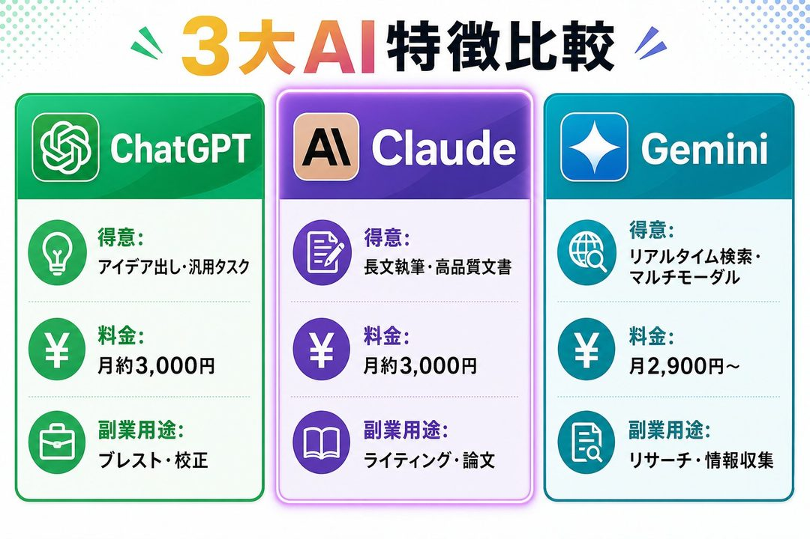
3大AIの特徴比較
1-3. 「使い分け」こそが2026年の副業最強戦略
ここで重要な発想の転換があります。
**「どのAIが一番いいか」という問いは間違っています。
**正しい問いは「どのAIをどの場面で使うか」です。
2026年の副業で成果を出している人たちは、決まって複数のAIを組み合わせて使っています。
最も効果的なパターンを一つ紹介しましょう。
「Geminiでリサーチ → Claudeで執筆 → ChatGPTで校正」
この3段ロケット型の作業フローを使えば、1記事あたりの品質が劇的に向上します。
Geminiのリアルタイム検索で最新情報を集め、Claudeの卓越した文章力で高品質な原稿を仕上げ、ChatGPTで最終確認をする——このフローを身につけることが、副業収入を安定的に伸ばすための基盤となります。
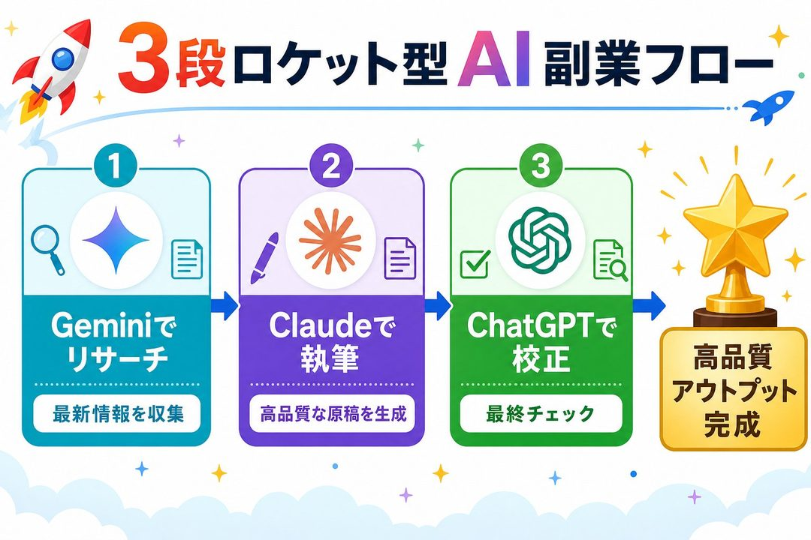
3段ロケット型AI副業フロー
1-4. 月収別「AI課金の正解」
多くの初心者が悩むのが「どのAIに課金すべきか」という問題です。
予算に限りがある場合、どのAIから始めるべきかを月収段階別に整理します。
副業月収0〜3万円の段階: まずはGeminiから始めましょう。
Googleアカウントさえあれば無料で使えます。
Geminiで基本的なリサーチとライティングをこなしながら、収益が出始めたらClaudeへの課金を検討します。
副業月収3〜10万円の段階: Claude Sonnet 4.6（月約$20相当）への課金が最優先です。
ライティングの品質が劇的に向上し、単価アップに直結します。
GeminiはGemini Advancedへのアップグレード（月2,900円）も検討する価値があります。
副業月収10万円以上の段階: 3大AI（ChatGPT Plus・Claude Pro・Gemini Advanced）すべてに課金することを推奨します。
月合計1万円程度の投資で得られるリターンは、収入を2〜3倍に押し上げる可能性があります。
AIへの課金は経費、つまり事業への投資と考えることが重要です。
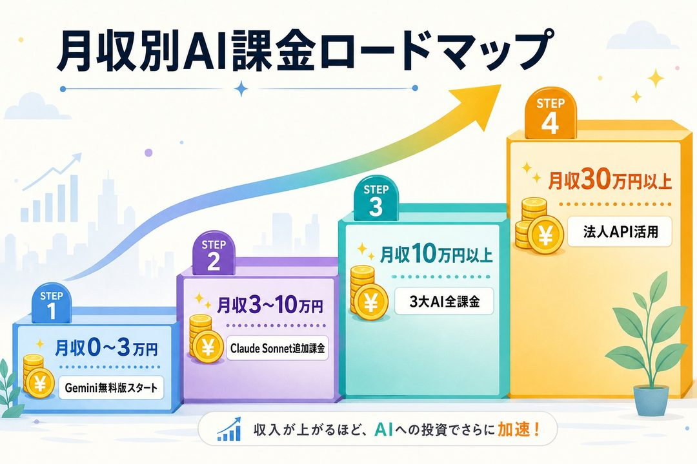
月収段階別AI課金ロードマップ
1-5. 本書で学べること——第2章以降のロードマップ
本章では、ChatGPT一強時代が終わりを告げ、Claude・Geminiを使い分ける時代が到来していることをお伝えしました。
第2章では、Claudeの具体的な強みを活かした高単価ライティング副業の全手順をお伝えします。
なぜClaudeが文章品質で他のAIを圧倒するのか、その理由と活用法を徹底解説します。
第3章では、Geminiならではのリサーチ×コンテンツ量産戦略を紹介します。
他の副業者が追いつけない「情報の鮮度と速度」を武器にする方法です。
第4章では、3大AIを連携させた月10万円フレームワークを公開します。
AI同士の役割分担を明確にすることで、作業効率を劇的に向上させます。
第5章では、月10万円を超えた後のスケールアップ戦略を解説します。
法人向け営業や外注化など、収入を青天井に伸ばすための仕組みづくりを学びます。
**複数AIを使いこなすことで、あなたの副業は他の誰とも違う差別化されたビジネスになります。
** それでは第2章へ進みましょう。
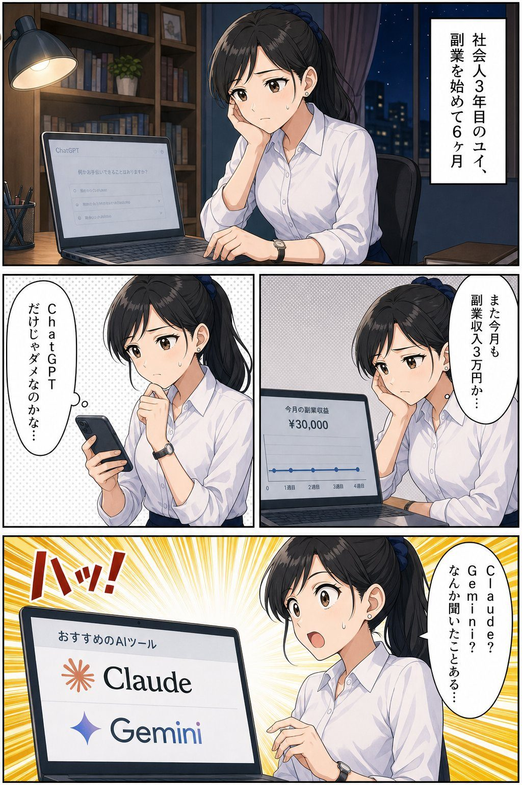
02第2章: Claudeの強みを活かした高単価ライティング副業の全手順
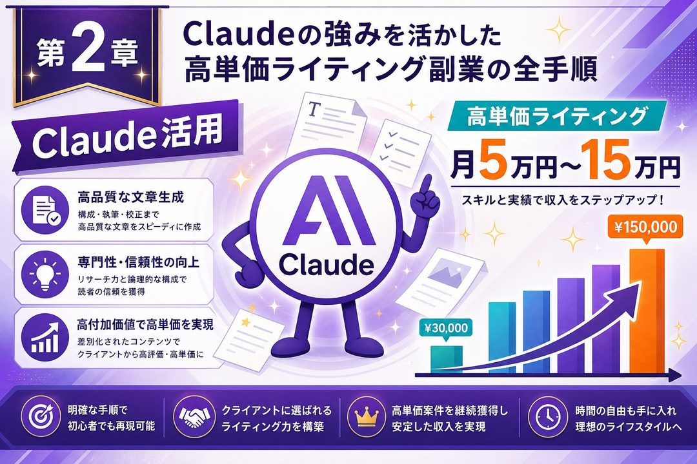
第2章: Claudeで高単価ライティング副業
2-1. なぜClaudeはライティングでNo.1なのか
副業でライティングを行うなら、Claudeが現時点で最もおすすめのAIです。
その理由を具体的に説明します。
2026年の主要AI性能ベンチマークでは、Claude Sonnet 4.6が「GDPval-AA」（実務的な専門家レベルの知識作業を模擬するテスト）で1,633 Eloというスコアを記録し、Gemini 3.1 Pro（1,317）はもちろん、上位モデルであるClaude Opus 4.6（1,559）さえも上回る驚異的な結果を出しています。
これは数字の話だけではありません。
実際にClaudeを使ってみると、その違いは明らかです。
Claudeが優れているポイントは3つあります。
**第一に、文脈の一貫性。
** 10,000字を超える長文を書かせても、文体・論旨・キャラクターの一貫性が崩れません。
ChatGPTは長文になると後半で「話題がブレる」問題がよく起きますが、Claudeはそれが極めて少ないです。
**第二に、ニュアンスの繊細さ。
** ビジネス文書に必要な「丁寧だが説得力がある」「親しみやすいが信頼感がある」といった微妙なトーン調整が、プロンプト一つで実現できます。
**第三に、批判的思考。
** 「この主張の弱点は何か」「反論を考えて」という指示に対して、表面的な答えではなく本質的な問題点を指摘する能力が他のAIより高いです。
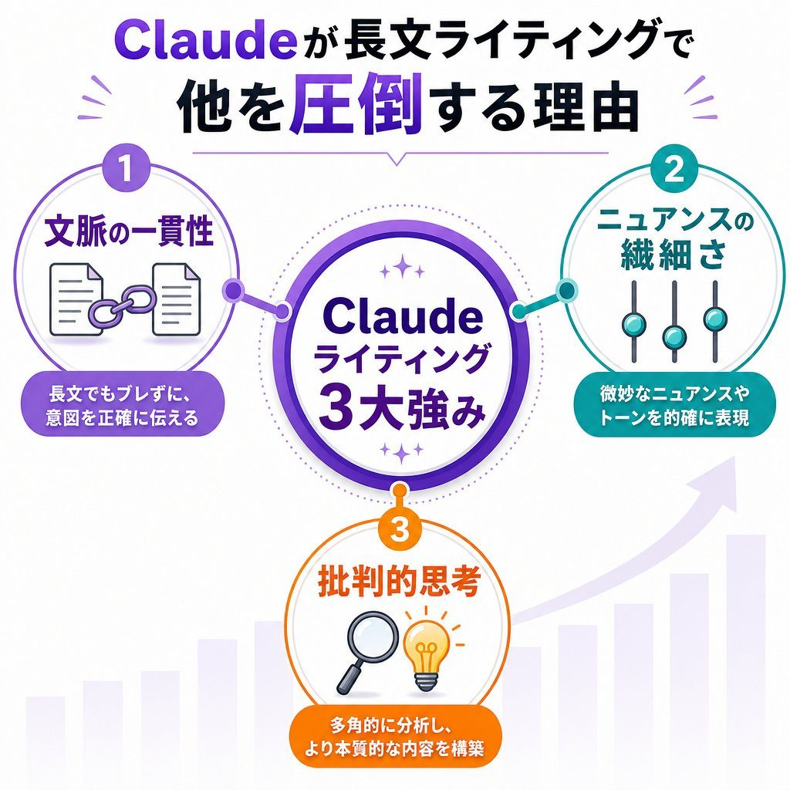
Claudeのライティング3大強み
2-2. Claudeで狙うべき高単価案件3選
Claudeの強みを活かした副業案件を3つ厳選して紹介します。
案件1: ホワイトペーパー・専門レポート作成（単価3万〜30万円）
ホワイトペーパーとは、企業が顧客向けに発行する専門的な報告書・論文形式のコンテンツです。
IT、マーケティング、金融、医療など、各業界で常に需要があります。
なぜClaudeが最適か: 専門用語の正確な使用、論理的な構成、長文での一貫性維持——これらすべてがClaudeの得意分野です。
具体的な受注方法: クラウドワークス・ランサーズの「ライター」カテゴリで「ホワイトペーパー」「専門レポート」と検索します。
単価が低い案件は避け、3万円以上の案件に絞って応募しましょう。
ポートフォリオ（見本原稿）をClaudeで作成して添付すると採用率が大幅に上がります。
案件2: メルマガ・ニュースレター代行（月3万〜10万円）
法人クライアントのメルマガを月次で代行するモデルです。
継続案件になりやすく、一度契約が取れると安定した収入源になります。
なぜClaudeが最適か: 毎月一定のトーンと品質を維持した文章が書けること、クライアントの「声」を再現する能力が高いこと。
具体的な受注方法: 自分でメルマガのサンプルをClaudeで作り、地元の中小企業や個人事業主に「メルマガ代行サービス」として提案します。
コールドメールより「知り合いのコネ」からの紹介が成功率は高いです。
案件3: AI活用コンサルティング記事（単価5万〜15万円）
AI業界のノウハウ記事は、今最も需要が高い専門コンテンツの一つです。
企業メディアやビジネス誌への寄稿案件で、Claude自体をリサーチ対象にして記事を書くという逆転の発想が有効です。
なぜClaudeが最適か: AIについての深い分析記事を書くために、Claudeに「このAIの強みと弱みを専門的な観点から解説して」と聞くと、一般ユーザーには書けない高品質な洞察が得られます。
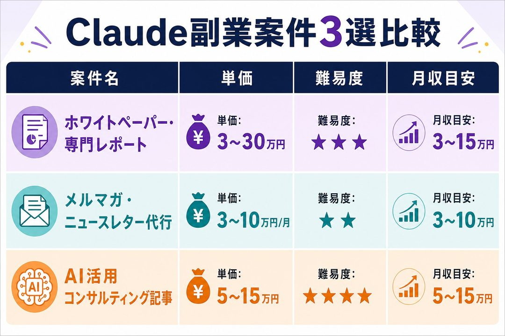
Claude副業案件3選比較
2-3. Claudeを使った実際の作業フロー
では、実際にClaudeでライティング副業を行う場合、どのような流れで作業するのかを解説します。
ステップ1: プロジェクト設定（所要時間: 10分）
Claudeには「プロジェクト」機能があります。
クライアントごとにプロジェクトを作成し、「あなたは〇〇業界のプロライターです」「このクライアントのブランドトーンは〜」という設定を保存できます。
次回以降は設定不要で、一貫したトーンで執筆できます。
ステップ2: アウトライン生成（所要時間: 5分）
テーマと要件をClaudeに伝え、まず目次・構成案を生成させます。
この段階でクライアントに構成を確認してもらうと、大幅な手戻りを防げます。
ステップ3: セクション別執筆（所要時間: 30〜60分）
アウトラインに沿って、1セクションずつ執筆させます。
一度に全文を生成させるより、セクション単位で生成・確認・修正を繰り返すほうが品質が安定します。
ステップ4: 事実確認・修正（所要時間: 20〜30分）
Claudeの出力には事実誤認が含まれることがあります。
必ず数字・固有名詞・統計データをGeminiまたはGoogle検索で確認してください。
この工程を省略すると、納品物の品質事故につながります。
ステップ5: 最終仕上げ（所要時間: 10〜20分）
人間の目線で読み直し、不自然な表現や過剰な「〜です。
〜ます。
」の繰り返しを修正します。
クライアントの業界用語や好みの表現に合わせた微調整も行います。
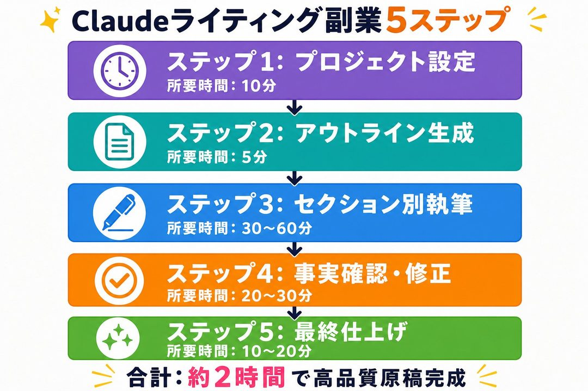
Claudeライティング副業5ステップ
2-4. 月5万円を実現するための受注計画
Claudeを使ったライティング副業で月5万円を達成するための具体的な計画を立てましょう。
週15時間の作業時間で月5万円を狙う場合:
- ホワイトペーパー1本（5万円）: 週3時間×4週 = 12時間
- メルマガ代行1社（3万円/月）: 週1時間×4週 = 4時間
- 合計: 月8万円、週16時間
最初の1〜2ヶ月は案件獲得に時間がかかります。
しかし一度実績が積み上がれば、クライアントからの紹介や指名が増え、3ヶ月目以降は同じ時間で収入が1.5〜2倍になるケースが多いです。
**重要なのは「最初の1案件」です。
** 単価が低くても実績を作ることを優先し、ポートフォリオを充実させましょう。
Claudeを使えば、クオリティの高い見本原稿を短時間で作れるため、他の副業者より圧倒的に有利なスタートが切れます。
2-5. Claudeで失敗しないための注意点
Claudeを使った副業で陥りやすい失敗を事前に把握しておきましょう。
失敗1: Claudeの出力をそのまま納品する
Claudeの出力は高品質ですが、あくまで「素材」です。
クライアントの業界慣習、ブランドトーン、最新の数値・情報を必ず人間がチェック・修正してから納品してください。
生成AIの出力をそのまま使うと、事実誤認やトーンのズレが生じることがあります。
失敗2: プロンプトが雑になる
Claudeはプロンプトの質に敏感です。
「記事を書いて」という雑なプロンプトでは、期待通りの出力は得られません。
「読者層・目的・トーン・文字数・構成要件」を明確に指定することが、高品質な出力への近道です。
失敗3: 1モデルだけに頼る
Claude Sonnet 4.6は万能ではありません。
最新情報のリサーチはGemini、アイデアのブレストにはChatGPTと使い分けることで、Claudeの強みを最大限に活かせます。
03第3章: Geminiで差をつけるリサーチ×コンテンツ量産戦略
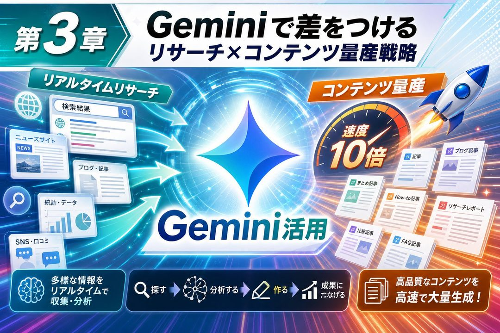
第3章: Geminiでリサーチ×量産戦略
3-1. GeminiはなぜリサーチAIとして最強なのか
副業でコンテンツを量産する際、最大の壁となるのが「リサーチの時間」です。
ChatGPTやClaudeは学習データに依存するため、最新情報の取得に限界があります。
しかしGeminiは違います。
GeminiはGoogleの検索エンジンと直接連携しています。
「今日の最新ニュース」「先週発表された新しい統計」「今月リリースされたサービス」といった情報をリアルタイムで取得できます。
これは副業において圧倒的なアドバンテージです。
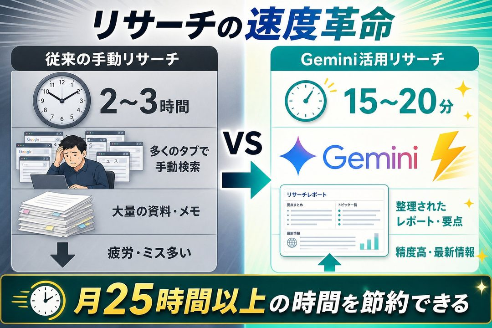
リサーチの速度革命
副業でコンテンツを月10本作る場合、リサーチだけで1本あたり2〜3時間かかっていた作業が、Geminiを使えば15〜20分に短縮できます。
月間で換算すると、25時間以上の時間を節約できる計算です。
この節約した時間でさらに多くの案件を受注できるため、収入の増加が加速します。
3-2. Gemini Deep Researchの使い方
2025年後半から提供が始まった「Gemini Deep Research」は、副業者にとってゲームチェンジャーとも言える機能です。
Deep Researchとは: テーマを入力するだけで、Geminiが自動的に複数のWebサイトを横断的に調査し、構造化されたリサーチレポートを生成してくれる機能です。
使い方の手順:
まず、Gemini Advanced（有料版）にログインし、「Deep Research」タブを開きます。
「〇〇についての最新動向と市場規模を調べて」「□□サービスの競合比較をして」といった指示を入力します。
Geminiが自動的に10〜20のWebサイトを調査し、5〜10分で詳細なレポートを作成してくれます。
このレポートをClaudeに渡して「このリサーチをもとに、初心者向けの解説記事を5,000字で書いて」と指示すれば、リサーチから原稿完成まで30分以内という驚異的な作業効率が実現します。
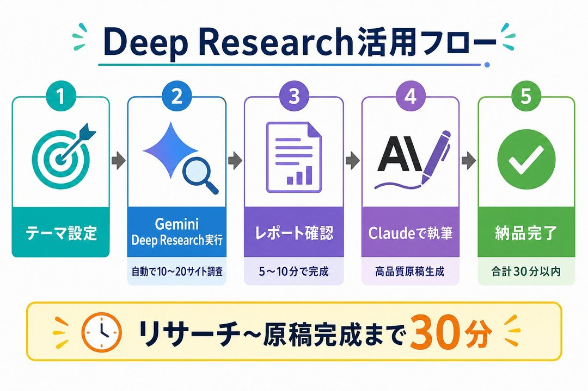
Deep Research活用フロー
3-3. Geminiを使ったコンテンツ量産5パターン
Geminiを副業に活用する具体的な5つのパターンを紹介します。
パターン1: ブログ記事量産（月3〜8万円）
SEO記事を量産する案件では、Geminiのリサーチ能力が直接収益に直結します。
作業手順: 検索キーワードを受け取り → Geminiで競合記事を調査 → 差別化ポイントを発見 → Claudeで本文執筆 → 納品
1記事あたりのコスト: Gemini使用時間20分 + Claude使用時間30分 = 合計50分で完成
パターン2: SNS投稿文作成代行（月2〜5万円）
企業のX（Twitter）やInstagram投稿を代行する案件です。
Geminiでトレンドを毎日リサーチし、企業ブランドに合わせた投稿文をClaudeで生成します。
月20社×1,000円/月 = 月2万円 という積み上げモデルが安定しています。
パターン3: ニュースレター作成（月5〜15万円）
業界のトレンドをまとめたニュースレターは、企業の経営者・マーケター向けに高い需要があります。
Geminiで最新情報を収集し、Claudeで分かりやすくまとめることで、週1本のニュースレターを2〜3時間で高品質に作成できます。
パターン4: 動画スクリプト作成（月5〜20万円）
YouTube・TikTok向けの台本制作は、単価が高く需要も増えています。
Geminiでトレンドのトピックとよく見られる動画の傾向をリサーチし、Claudeで視聴者が最後まで見たくなる台本を書きます。
1本3万円の動画スクリプトを月5本受注 = 月15万円が現実的な目標です。
パターン5: 競合分析レポート（月5〜30万円）
企業のマーケティング部門が欲しがる「競合分析レポート」は、Geminiの強みが最も活きる案件です。
複数の競合サービスを横断的にリサーチし、強み・弱み・機会・脅威（SWOT分析）をまとめたレポートは1本10〜30万円の高単価案件も珍しくありません。
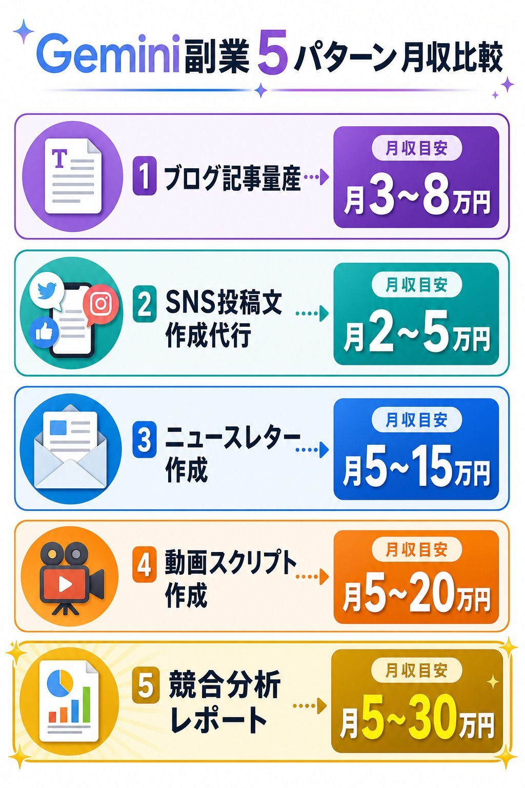
Gemini副業5パターン月収比較
3-4. Gemini×Google Workspace連携で効率を10倍にする
GeminiはGoogle Workspace（Gmail・Google Docs・Spreadsheet・Slides）と深く統合されています。
この連携機能を使いこなすことで、副業の作業効率が劇的に向上します。
Gmail連携: 受け取ったクライアントメールの要約・返信文案の自動生成。
「このメールに丁寧に断る返信を書いて」「この要件を整理してリスト化して」といった作業が一瞬で完了します。
Google Docs連携: 文書を開いた状態でGeminiに「この文書の誤字脱字を直して」「このレポートの結論部分を強化して」と指示できます。
コピー&ペーストなしの編集が可能です。
Spreadsheet連携: 副業の収支管理・案件管理表に対して「今月の収入が最も高い案件タイプは何か」「来月の見通しを計算して」と自然言語で分析を依頼できます。
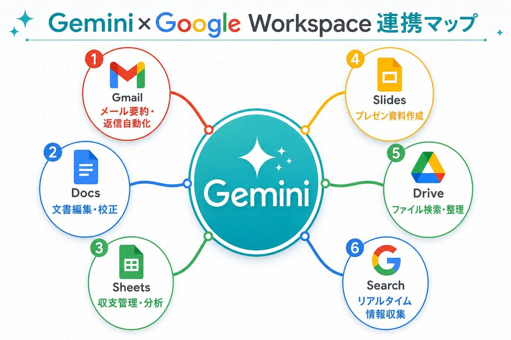
Gemini×Google Workspace連携マップ
3-5. Gemini活用で陥りやすい落とし穴
Geminiを使った副業で注意すべき点を整理します。
落とし穴1: 情報の信頼性を過信する
Geminiはリアルタイムで情報を取得しますが、情報源の信頼性はさまざまです。
Wikipedia・個人ブログ・SNSの投稿なども情報源に含まれます。
重要な数字や統計は必ず一次情報（政府機関・研究機関・信頼できる専門メディア）を確認してください。
落とし穴2: 著作権への無頓着
Geminiがリサーチした内容には他のサービスのコピーライトが含まれる可能性があります。
リサーチ結果を直接コピーするのではなく、要約・再構成・自分の言葉での言い換えを徹底してください。
落とし穴3: プロンプトが曖昧
「〇〇について調べて」という曖昧なプロンプトでは、Geminiが返す情報が表面的になります。
「〇〇について、2026年の最新データを含め、初心者向けに具体的な数字と事例を交えて調べて」というように、具体的な要件を盛り込むことが重要です。
04第4章: 3大AI連携フレームワーク——月10万円を実現する役割分担術
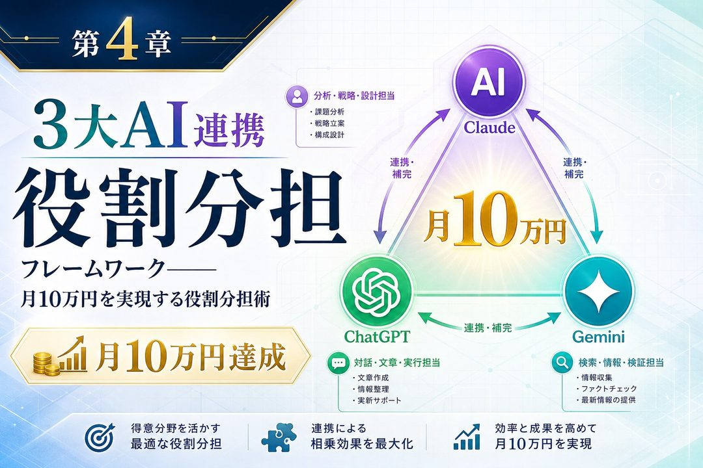
第4章: 3大AI連携で月10万円
4-1. 月10万円の壁——1つのAIでは越えられない理由
副業で月5万円まで稼げるようになったのに、そこから先が伸びない——これは「1つのAI依存」が最大の原因です。
月5万円は、1つのAIを使いこなすだけでも達成できます。
しかし月10万円を超えるためには、作業量を増やすのではなく、1案件あたりの品質と単価を上げる必要があります。
そのための最強の武器が、3大AIの連携フレームワークです。
「月10万円の壁」を越えるための方程式:
月10万円 ＝ 高単価案件（5万円×2件）または中単価案件（2万円×5件）＋ 継続案件（月3万円×1社）
この方程式を満たすには、より高品質なアウトプットを、より短時間で作れる能力が必要です。
3大AI連携がその答えです。
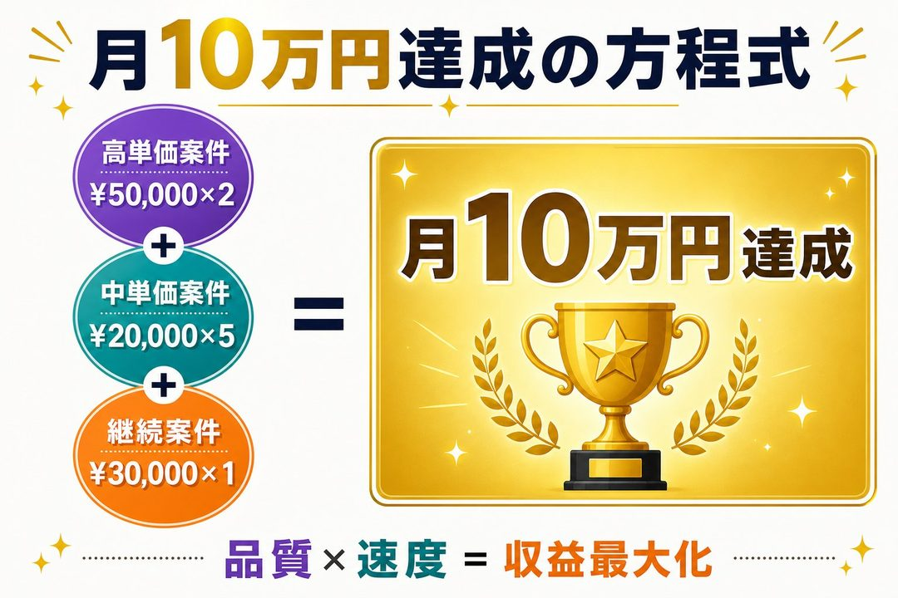
月10万円達成の方程式
4-2. 3大AI役割分担マトリクス
3大AIにはそれぞれ最も活きる役割があります。
この「役割分担マトリクス」を理解することが、月10万円達成の核心です。
ChatGPTの役割: アイデアマン
- 最初のアイデア出し・ブレインストーミング
- 多様な視点からの提案・発想の展開
- 読者の反応予測・マーケティング的な視点
- 短文のキャッチコピー・タイトル案の大量生成
Claudeの役割: 執筆職人
- 高品質な長文・ビジネス文書の執筆
- 複雑な論理展開・推論
- 文体・トーンの精密なコントロール
- プロ品質の校正・リライト
Geminiの役割: 情報収集官
- リアルタイムのWeb情報収集
- 競合調査・市場分析
- 最新データ・統計の取得
- Google Workspace連携による業務自動化
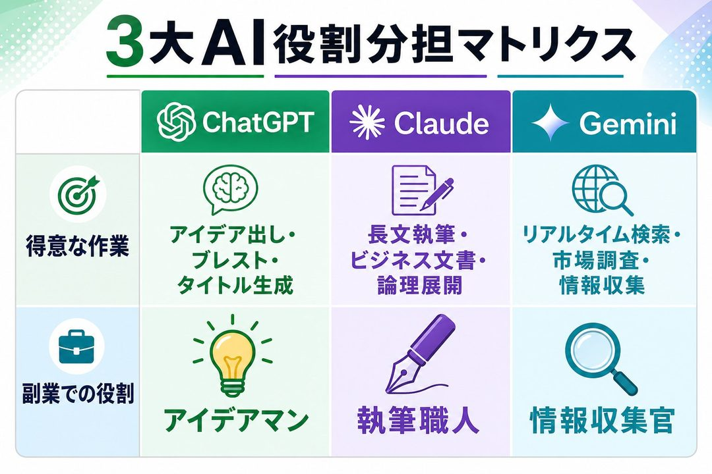
3大AI役割分担マトリクス
4-3. 実際の連携ワークフロー——ホワイトペーパー15万円案件の例
具体的な案件を例に、3大AI連携ワークフローを詳しく解説します。
案件概要: IT企業向けホワイトペーパー（15,000字・15万円）「2026年のAI活用による業務効率化の最新事例と導入ステップ」
ステップ1（Gemini担当）: リサーチ フェーズ（所要時間: 30分）
Gemini Deep Researchに「2026年のAI業務効率化の最新事例と導入事例を日本企業中心に調べて。
統計データも含めて」と指示します。
20〜30のWebサイトを横断したリサーチレポートが自動生成されます。
ステップ2（ChatGPT担当）: 構成アイデア フェーズ（所要時間: 15分）
GeminiのリサーチレポートをChatGPTに渡し「この情報をもとに、IT部門長向けホワイトペーパーの目次案を5パターン作って。
読者が最も課題解決を感じられる構成を重視して」と指示します。
複数の視点から目次案が生成されます。
ステップ3（Claude担当）: 執筆 フェーズ（所要時間: 2〜3時間）
Geminiのリサーチ内容 + ChatGPTの目次案をClaudeに渡し、「以下の情報をもとに、IT部門長向けのホワイトペーパーを15,000字で執筆してください。
ビジネス書調で、具体的な数字と事例を豊富に含めてください」と指示します。
高品質な原稿が生成されます。
ステップ4（人間担当）: 確認・修正 フェーズ（所要時間: 1時間）
事実確認・クライアントの専門用語への対応・トーン調整を人間が行います。
この工程だけは省略してはなりません。
合計作業時間: 約4〜5時間 → 15万円
時給換算すると3万〜3.75万円/時間という驚異的な生産性です。
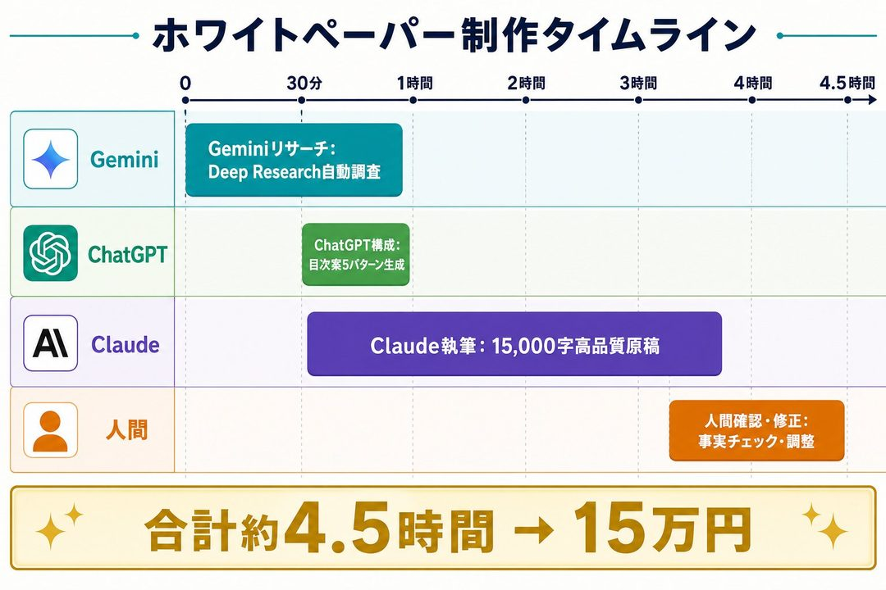
ホワイトペーパー制作タイムライン
4-4. プロンプト設計——3大AI連携を最大化する技術
3大AI連携を効果的に行うには、各AIへの指示（プロンプト）を適切に設計することが重要です。
Geminiへの最強プロンプトパターン:
Claudeへの最強プロンプトパターン:
ChatGPTへの最強プロンプトパターン:
4-5. 月10万円を3ヶ月で達成するアクションプラン
第4章の締めとして、月10万円を3ヶ月で達成する具体的なアクションプランをお伝えします。
1ヶ月目: 基盤づくり（月収目標: 2〜3万円）
Week1: ChatGPT・Claude・Geminiのアカウント開設と基本操作習得。
Claudeで自分のポートフォリオ記事（見本原稿）を3本作成。
Week2〜3: クラウドワークス・ランサーズに登録。
単価5,000〜1万円の小案件を3〜5件受注・納品。
レビューを蓄積する。
Week4: 得意な案件タイプを特定。
高単価案件（3万円以上）への応募を開始する。
2ヶ月目: 拡大期（月収目標: 5〜7万円）
高単価案件を2〜3件受注。
継続案件の獲得を目指す。
Gemini Deep Researchの活用で1案件あたりの作業時間を50%削減する。
3ヶ月目: 安定期（月収目標: 10万円以上）
継続案件を2社以上確保。
高単価案件（5万円以上）を月1〜2件ペースで受注。
クライアントからの紹介による新規案件獲得を目指す。
月10万円達成3ヶ月ロードマップ
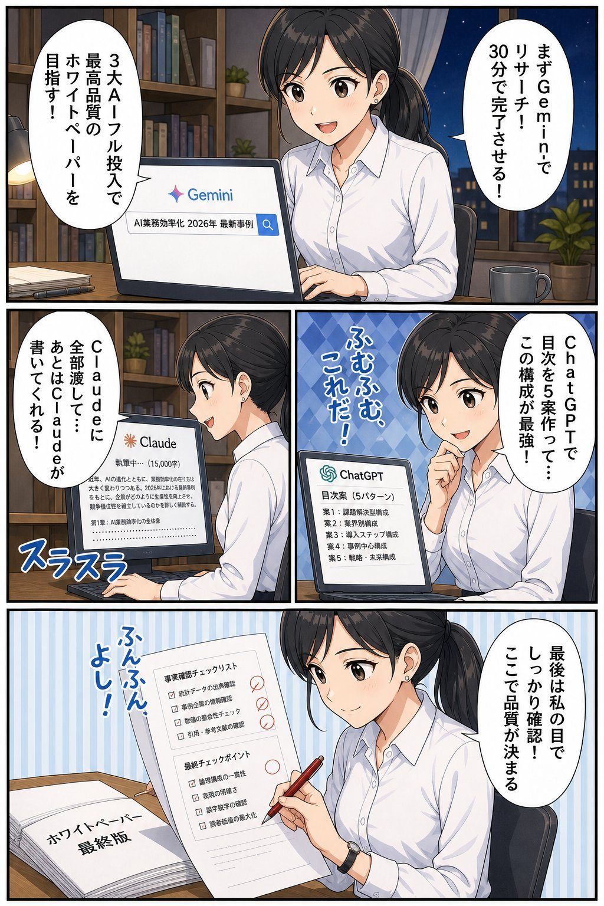
05第5章: 月10万円から月30万円へ——スケールアップのロードマップ
第5章: 月30万円へのスケールアップ
5-1. 月10万円からは「量」より「仕組み」
月10万円を達成した副業者が次につまずく落とし穴があります。
それは「さらに稼ぐには、もっと働かなければならない」という思い込みです。
月10万円から月30万円に収入を伸ばす方法は、大きく2つあります。
方法A: 単価を上げる — 同じ時間で、より高単価な仕事を受ける
方法B: 仕組みを作る — 自分が働かなくても収入が生まれる仕組みを構築する
正解は「AとBを同時に進める」です。
単価を上げながら、徐々に仕組みを作っていく。
これが月30万円への最速ルートです。
5-2. 単価を3倍にする「専門特化」戦略
月収を3倍にする最も確実な方法は専門特化です。
オールラウンダーより、特定の分野に特化したスペシャリストのほうが3〜5倍の単価を請求できます。
AI副業での専門特化の例:
「AI×医療ライター」として医療機関向けのAI導入支援コンテンツを専門にする — 単価は一般ライターの3〜5倍（1本10〜30万円）
「AI×法務」として法律事務所向けの文書自動化コンサルティング記事を専門にする — 顧問契約で月30〜50万円も可能
「AI×教育」として学校・学習塾向けのAI活用教材作成を専門にする — 教材1セット20〜100万円の案件がある
どの分野に特化するかは、あなたの前職・現職の専門知識を活かすのが最も早いです。
AIの知識 × 業界専門知識 = 圧倒的な差別化が生まれます。
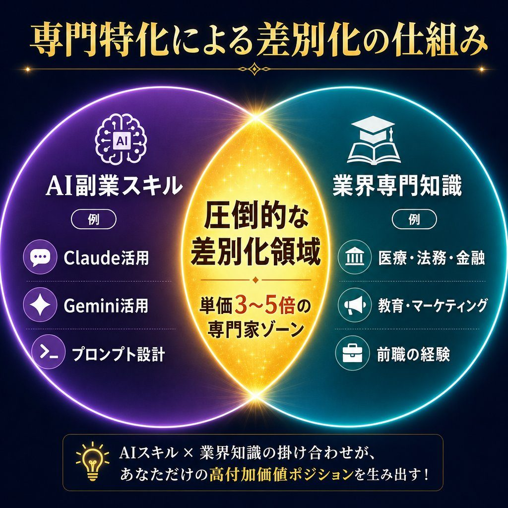
専門特化の差別化図
5-3. 「外注化」で収入を青天井にする
月10万円を超えたら、外注化（一部の仕事を他の人に任せる）を検討し始めましょう。
外注化の基本モデル:
あなた → クライアントに5万円の案件を受注 → 外注先に2万円で制作依頼 → 差額3万円が純利益
このモデルを5案件で回せば、月15万円の純利益が生まれます。
自分の稼働は案件管理とクライアントとのコミュニケーションのみになります。
外注先の見つけ方: クラウドワークス・ランサーズで「AIライター」「AI副業」で検索し、実績のある人材を探します。
最初は単発で小さな案件を依頼し、品質を確認してから継続発注へ移行します。
外注化のリスク管理:
外注先の品質が案件品質を直接左右します。
必ず自分でチェック・修正する工程を確保してください。
外注先にClaudeを使わせて、あなたはチェックと品質管理に集中するモデルが、最も効率的に機能します。
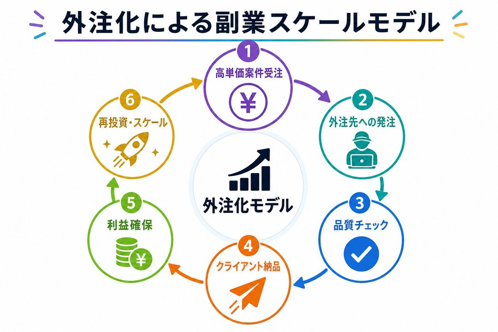
外注化による副業スケールモデル
5-4. 法人向けビジネスへの移行——真の月30万円への道
個人の副業から「法人向けビジネス」へと移行することが、月30万円を安定的に達成するための最大のステップです。
法人向けビジネスと個人副業の違い:
個人副業: 1案件ごとの取引 → 収入が不安定
法人向け: 月額顧問契約・年間契約 → 収入が安定
法人向けに移行するための「入口」3つ:
入口1: SNS×専門家ブランディング
X（Twitter）やLinkedIn、noteで「AI×〇〇専門家」としての発信を続けます。
月100本の投稿で、確実にフォロワーと信頼が積み上がります。
Claudeで投稿文を生成し、Geminiで最新トピックをリサーチすれば、毎日の更新も苦になりません。
法人からの問い合わせが来始めるまで、平均3〜6ヶ月かかります。
入口2: 無料セミナー・勉強会の主催
地域の商工会や業界団体に連絡し、「AIを使った業務効率化・副業」の無料セミナーを提案します。
主催側に費用負担がないため、承認されやすいです。
参加者の中から顧問契約につながるクライアントが生まれるケースが多いです。
入口3: 既存クライアントからの紹介
副業で実績を積んだクライアントに「知り合いの企業に同じサービスを紹介していただけませんか？」と相談します。
紹介からの法人契約は、信頼関係が既にあるため成約率が高く、トラブルも少ないです。
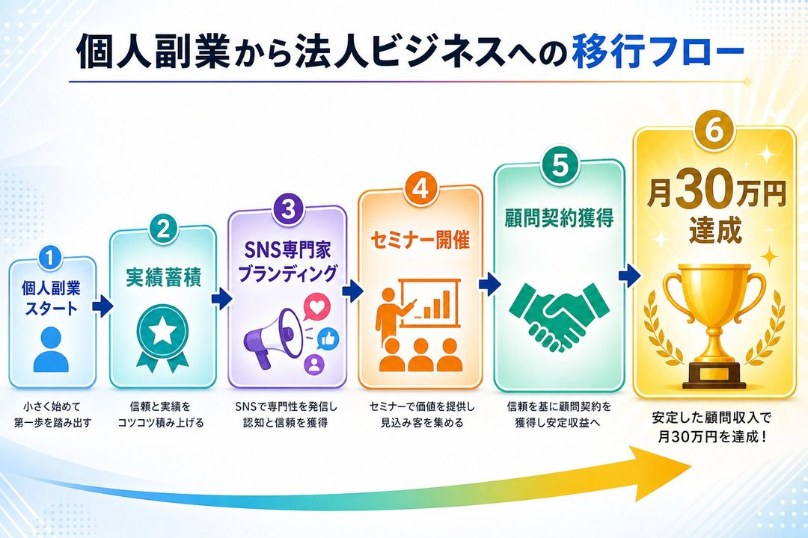
個人副業から法人ビジネスへの移行フロー
5-5. 月30万円達成者の1日のルーティン
実際に月30万円を達成したAI副業者の1日のルーティンを参考にしましょう。
午前（2〜3時間）: コア作業タイム
メールチェック（Gmail × Gemini連携で要約・返信案生成: 15分）、当日の案件作業（Claude中心: 1.5〜2時間）、外注先への指示・確認（30分）
午後（1〜2時間）: 営業・ブランディングタイム
SNS投稿（Claudeで生成: 30分）、新規案件の応募・クライアントへの提案（Geminiでリサーチ→Claudeで提案文作成: 1時間）
夜（1時間）: インプット・スキルアップ
AI業界の最新情報収集（Gemini Deep Research: 30分）、新しいプロンプト技術の試行（ChatGPT・Claude: 30分）
合計稼働時間: 4〜6時間/日（週5日稼働）
月30万円を4〜6時間/日の稼働で達成できるのは、3大AI連携による圧倒的な生産性向上のおかげです。
AIなしで同等の仕事をすれば、10〜12時間/日の稼働が必要なところを、AIが「優秀なアシスタント」として機能することで作業量を60〜70%削減しています。
5-6. AI副業の未来——2027年以降を見据えた準備
最後に、AI副業の将来展望と、今から準備すべきことをお伝えします。
2027年以降の確実なトレンド:
AIエージェントの普及により、単純作業の多くがAI自身によって完全自動化されます。
ライティング・リサーチ・データ分析といった作業は、AIエージェントが人間の指示なしに実行できるようになります。
これは脅威ではなく、チャンスです。
**AIエージェントを「部下」として使いこなせる人間の価値は、むしろ上がり続けます。
**
今から準備すべき3つのこと:
第一に、特定分野の専門知識を深めることです。
AIが代替できるのは汎用的な作業です。
特定業界の深い知識・人脈・判断力は、AIには替えられません。
第二に、クライアントとの信頼関係を構築することです。
AIが品質を均質化する時代、「この人に頼みたい」という信頼・関係性こそが最大の差別化要因になります。
第三に、複数のAIツールを使いこなすスキルを磨くことです。
Claude・Gemini・ChatGPTは今後もアップデートを続けます。
新しいモデルや機能が出るたびに素早くキャッチアップし、使いこなせる人が副業市場でリードし続けます。
**AIと協力しながら、AIに替えられない「人間ならではの価値」を磨く。
** これが2027年以降も活躍し続けるAI副業者の本質的な戦略です。
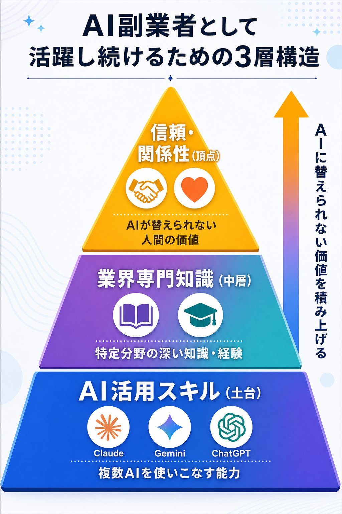
AI副業者として活躍し続けるための3層構造
おわりに
本書を最後まで読んでくれた、ありがとうございます。
最初に問いかけた「ChatGPTだけで稼げない」という悩み——その答えはシンプルです。
**1つのAIに依存するのをやめること。
**
Claude・Gemini・ChatGPTはそれぞれに異なる強みを持った「専門家チーム」です。
ライティングはClaudeに、リサーチはGeminiに、アイデア出しはChatGPTに——この役割分担を実践するだけで、副業の生産性と品質は劇的に向上します。
月10万円は、3大AIを使いこなせば現実的な目標です。
月30万円も、専門特化と外注化・法人向けビジネスへの移行を進めれば、6〜12ヶ月以内に射程圏内に入ります。
ただし、忘れないでください。
**AIはあくまでツールです。
** AIを操る「あなた」の判断力・専門知識・クライアントとの信頼関係こそが、最終的な収入を決める本質的な要因です。
本書で学んだことを今日から1つずつ実践してください。
完璧を目指さなくていいです。
まず1案件、まず1本のポートフォリオ記事を、Claude・Geminiを使って作ってみることから始めましょう。
**複数AIを使いこなすあなたの副業が、今日から新しいステージへと踏み出すことを、心から応援しています。
**
© 竹谷知悦 / 特別プレゼント版